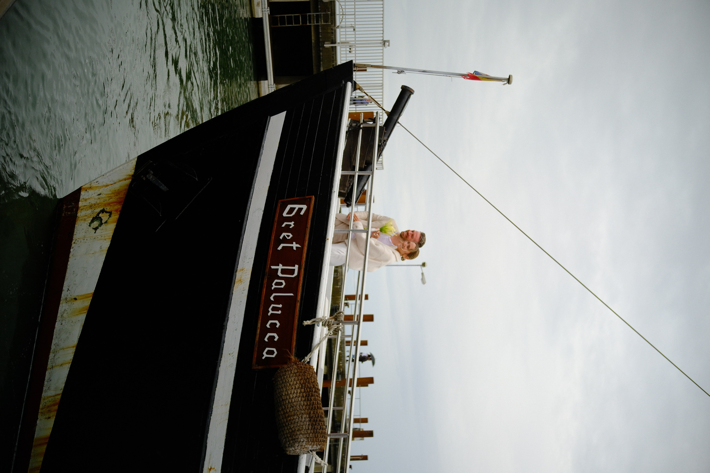
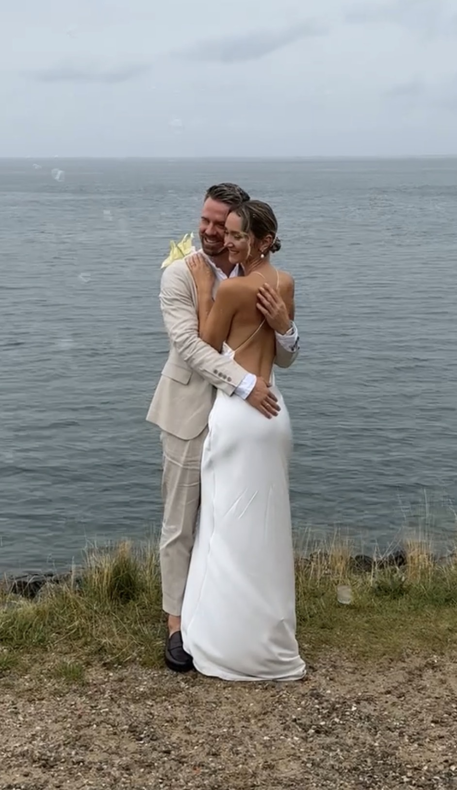
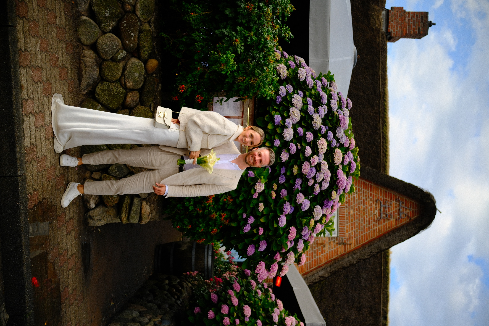
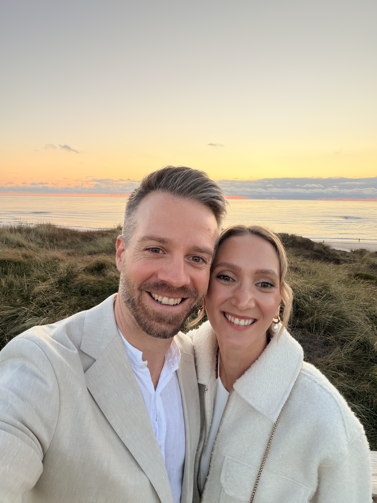

Tippe auf das Siegel
Wir feiern
19. Dezember 2026 · Rive Gauche · Baden-Baden
19. Dezember 2026
Wir freuen uns auf euch.
Rive Gauche · Lichtentaler Allee 8 · 76530 Baden-Baden
Route starten19. Dezember 2026
Danke, dass ihr dabei wart.
Über uns
Am 31. Juli 2026 haben wir auf Sylt standesamtlich geheiratet. Ein kleiner Tag im engsten Kreis, mit Wind, Meer und ziemlich viel Sand in den Schuhen.
Was uns gefehlt hat, wart ihr. Deshalb feiern wir am 19. Dezember in Baden-Baden noch einmal richtig: mit freier Trauung, gutem Essen und einer langen Nacht.




Zum Vergrößern auf ein Bild tippen.
19. Dezember 2026
Plant für die Anfahrt etwas Puffer ein, am 19. Dezember ist Weihnachtsmarkt in Baden-Baden.
Wir geben uns das Ja-Wort. Wir fangen pünktlich an, seid also bitte vorher da.
Drinks und kleine Snacks. Zeit, sich zu begrüßen und miteinander anzustoßen.
Festliches Abendessen mit ein paar Reden.
Die Tanzfläche ist frei. Für die Musik sorgt DJ Olde, den ihr vom bigFM Daily Live Mix kennt. Ab jetzt fahren auch unsere Shuttles.
Die Bar macht Feierabend.
Danach fahren die Shuttles, bis alle zu Hause sind.
Kleine Änderungen sind noch möglich. Sobald alles final steht, findet ihr es hier.
Location
Ab 22:00 Uhr fahren zwei Neunsitzer, mehrmals über die Nacht, bis alle zu Hause sind. Angefahren werden Bühl, Bühlertal und der Großraum Baden-Baden. Ihr müsst euch auf keine Uhrzeit festlegen.
Kommt also gerne ohne Auto, dann könnt ihr am Abend auch mittrinken. Wer es noch bequemer haben möchte oder von weiter weg kommt, nimmt sich am besten ein Hotel in Baden-Baden.
Sagt uns bei eurer Anmeldung Bescheid, ob und wohin ihr mitfahren möchtet.
Mitten im Zentrum, direkt an der Lichtentaler Allee.
Der Bahnhof Baden-Baden liegt an der ICE-Strecke, von dort fahren Busse und Taxis in die Innenstadt. Mit dem Auto geht es über die A5. An der Location gibt es keine eigenen Parkplätze, in der Innenstadt aber mehrere Parkhäuser. Plant an dem Abend etwas Puffer ein, der Weihnachtsmarkt sorgt für Betrieb.
Am schönsten ist ein Hotel in Baden-Baden: Ihr müsst nachts nirgendwo hin und habt am nächsten Tag noch etwas von der Stadt. Rund um die Innenstadt gibt es Häuser in jeder Preisklasse, viele in Laufweite zur Location. Bucht früh, im Advent ist hier einiges los.
Im Dezember ist es kalt und oft feucht, meist um den Gefrierpunkt. Denkt an einen warmen Mantel.
Gut zu wissen
Wir bitten euch um 16:30 Uhr ins Rive Gauche. Die Trauung beginnt um 17:00 Uhr, und zwar pünktlich. Plant für die Anfahrt genug Zeit ein, wegen des Weihnachtsmarkts ist in der Innenstadt viel los.
Wir feiern am 19. Dezember 2026 im Rive Gauche, Lichtentaler Allee 8, 76530 Baden-Baden. Trauung und Feier sind am selben Ort, ihr müsst zwischendurch also nirgendwo hin.
An der Location selbst gibt es keine Parkplätze, in der Innenstadt aber mehrere Parkhäuser. Am einfachsten kommt ihr mit dem Taxi, der Bahn oder in einer Fahrgemeinschaft. Wer ein Hotel in der Nähe bucht, hat es am entspanntesten.
Ja. Ab 22:00 Uhr fahren zwei Neunsitzer mehrmals über die Nacht und bringen euch nach Bühl, Bühlertal und in den Großraum Baden-Baden. Sie fahren, bis alle zu Hause sind, ihr müsst euch also nicht auf eine Uhrzeit festlegen. Bitte gebt bei der Anmeldung an, ob und wohin ihr mitfahren möchtet. Wer von weiter weg kommt, nimmt sich am besten ein Hotel in Baden-Baden oder ein Taxi.
Wir wünschen uns festliche, schicke Abendgarderobe. Kommt in dem, worin ihr euch wohlfühlt und worin ihr tanzen könnt.
Wir empfehlen euch, ein Hotel zu buchen: Ihr müsst nachts nirgendwo hin und habt am nächsten Tag noch etwas von der Stadt. Rund um die Innenstadt gibt es Hotels in jeder Preisklasse, viele davon in Laufweite zur Location. Bucht früh, im Advent ist hier viel los.
Um 3:30 Uhr ist letzte Runde an der Bar, um 4:00 Uhr geht die Musik aus.
Ab 22:00 Uhr legt DJ Olde auf. Er ist bigFM-DJ, läuft dort regelmäßig im Daily Live Mix und spielt quer durch Hip-Hop, Black Beats, Dancehall und Charts. Das ist unser Highlight des Abends, und wer ihn schon einmal gehört hat, weiß warum.
Eure Anwesenheit ist das schönste Geschenk für uns! Solltet ihr uns dennoch etwas schenken wollen, unterstützt ihr damit gerne unsere gemeinsamen Zukunftspläne und die Flitterwochen.
Der Abend hat einen festen Rahmen, und wir möchten niemanden dazu drängen, sich etwas zu überlegen. Wenn ihr trotzdem etwas sagen möchtet, sprecht vorher mit unseren Trauzeugen Isabell und Stefan. Die beiden kennen den Ablauf und sagen euch, ob und wann es passt.
Wir wünschen uns eine Feier, bei der die Erwachsenen einmal ganz in Ruhe tanzen können. Daher sind die Kinder an diesem Abend bei ihren Babysittern in besten Händen.
Bitte gebt Unverträglichkeiten oder besondere Ernährungswünsche direkt bei der Anmeldung mit an, damit die Küche sich darauf einstellen kann.
Wir freuen uns über eure Rückmeldung bis zum 31. Oktober 2026.
Zur Rückmeldung